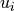
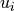

biweight_location¶
-
astropy.stats.biweight_location(data, c=6.0, M=None, axis=None)[source] [edit on github]¶ Compute the biweight location.
The biweight location is a robust statistic for determining the central location of a distribution. It is given by:
where
 is the input data,
is the input data,  is the sample median
(or the input initial location guess) and  is given by:
is the sample median
(or the input initial location guess) and  is given by:where
 is the tuning constant and is the
median absolute deviation. The
biweight location tuning constant
is the tuning constant and is the
median absolute deviation. The
biweight location tuning constant cis typically 6.0 (the default).Parameters: data : array-like
Input array or object that can be converted to an array.
c : float, optional
Tuning constant for the biweight estimator (default = 6.0).
M : float or array-like, optional
Initial guess for the location. If
Mis a scalar value, then its value will be used for the entire array (or along eachaxis, if specified). IfMis an array, then its must be an array containing the initial location estimate along eachaxisof the input array. IfNone(default), then the median of the input array will be used (or along eachaxis, if specified).axis : int, optional
The axis along which the biweight locations are computed. If
None(default), then the biweight location of the flattened input array will be computed.Returns: biweight_location : float or
ndarrayReferences
[R56] Beers, Flynn, and Gebhardt (1990; AJ 100, 32) (http://adsabs.harvard.edu/abs/1990AJ....100...32B) [R57] http://www.itl.nist.gov/div898/software/dataplot/refman2/auxillar/biwloc.htm Examples
Generate random variates from a Gaussian distribution and return the biweight location of the distribution:
>>> import numpy as np >>> from astropy.stats import biweight_location >>> rand = np.random.RandomState(12345) >>> biloc = biweight_location(rand.randn(1000)) >>> print(biloc) -0.0175741540445